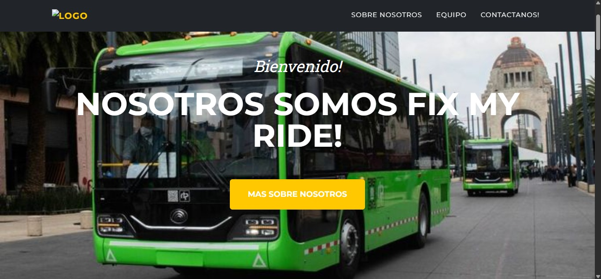
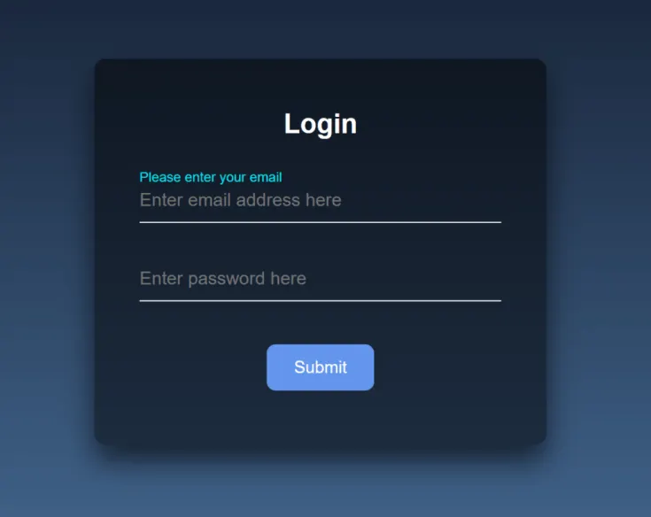

Proyectos



fixMyRide
Propuesta para levantar reportes del transporte público y mantener un registro mejor elaborado de fallas y problemas.


Proyecto Individual
Registro y login de usuarios, con gestión completa para crear, editar y eliminar tareas. Cuenta con roles de usuario y admin.
Encuestas
Proyecto para registrar respuestas de encuestas a usuarios con una interfaz sencilla y funcional.
CV Profesional
Descarga mi CV en PDF con mis datos, formación, habilidades y proyectos destacados.
📄 Descargar CVHabilidades Técnicas
- 🟨 JavaScript
- 🌐 HTML / CSS
- 🔥 Firebase
- 🍃 MongoDB
- ⚙️ Node.js (básico)
- 🛠️ Git & GitHub
Contacto
📧 alanjesuschavezgonzalez@gmail.com
LinkedIn GitHub